1、窗口事件
易语言演示：
在易语言中可通过双击设计器添加默认窗口事件。
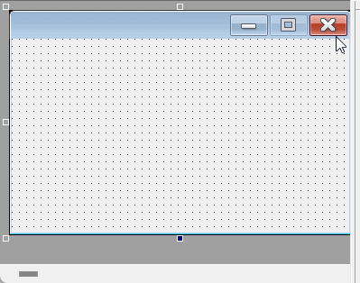
或者通过属性栏中的组合框，点击选择事件并添加。
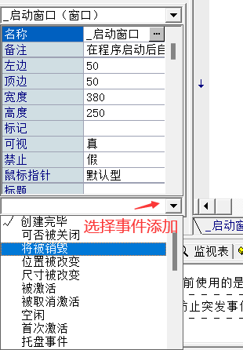
火山演示：
在火山中有四种事件添加方式，分别如下：
1. 双击窗口设计器添加默认事件。
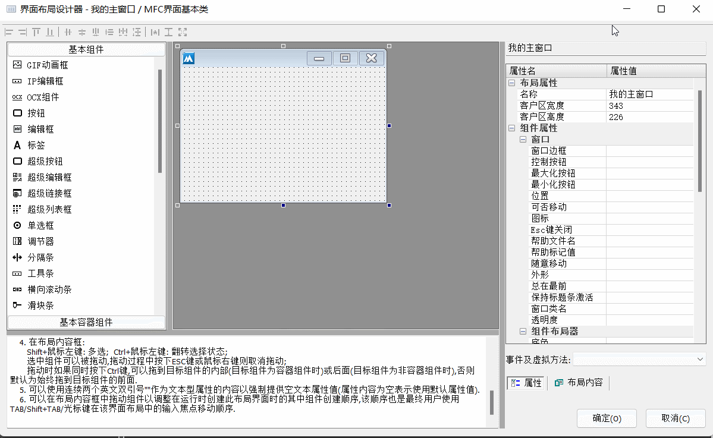
2. 点击属性栏下方的组合框添加事件。
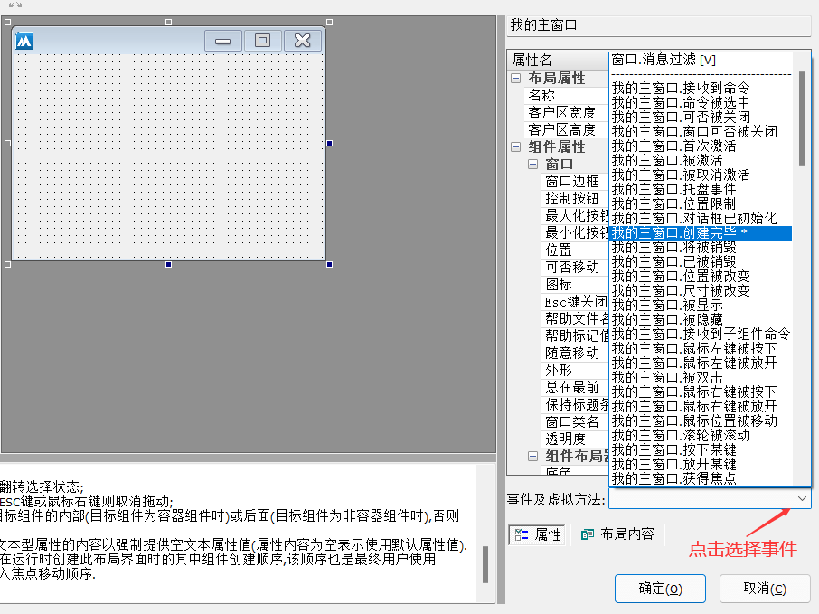
3. 从窗口类名添加事件。
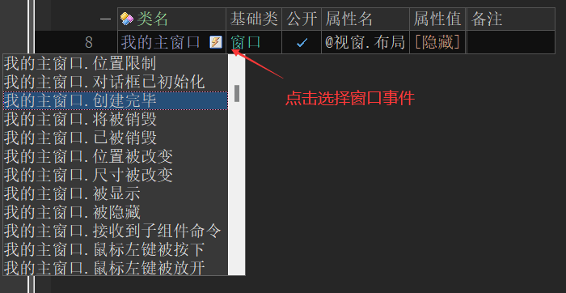
4. 从窗口变量添加事件。
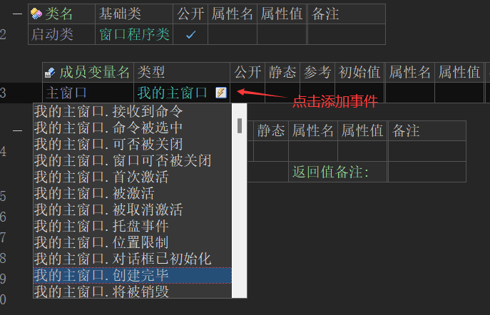
注：如果类和窗口变量同时添加事件，那么最终会以类添加的事件为准，变量中添加的事件会被覆盖。
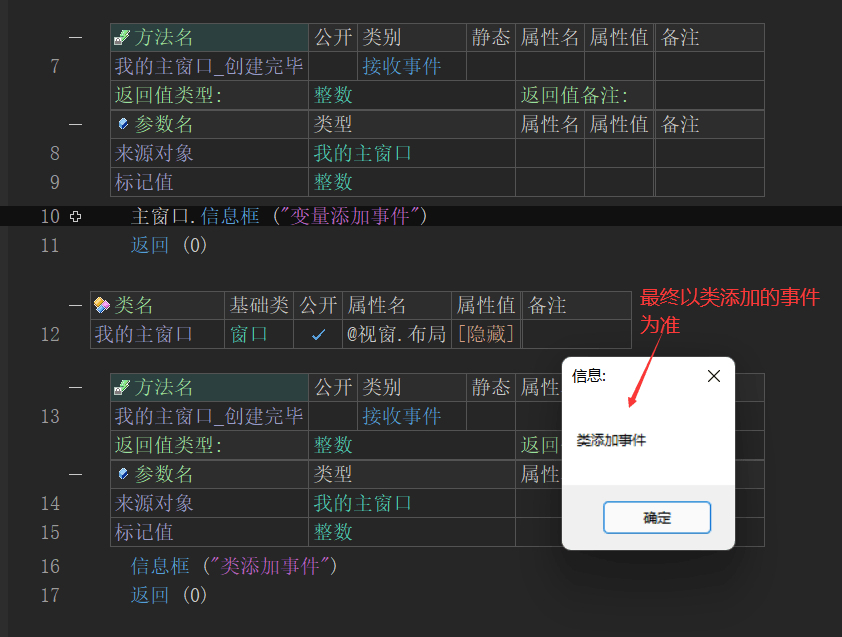
2、窗口属性
易语言窗口属性有两种调用方式，分别如下：
1. 通过属性栏设置属性。
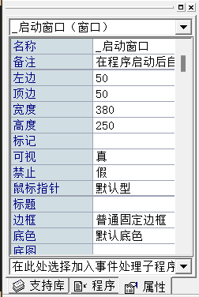
2. 通过代码动态设置。
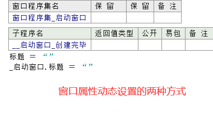
在火山中则有五种调用方式，分别如下：
1. 通过窗口设计器属性栏设置属性。
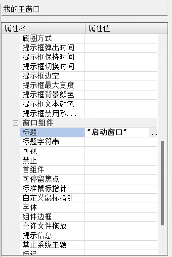
2. 通过窗口类属性表设置。
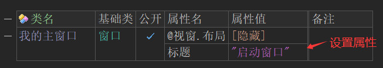
3. 通过变量表设置属性。
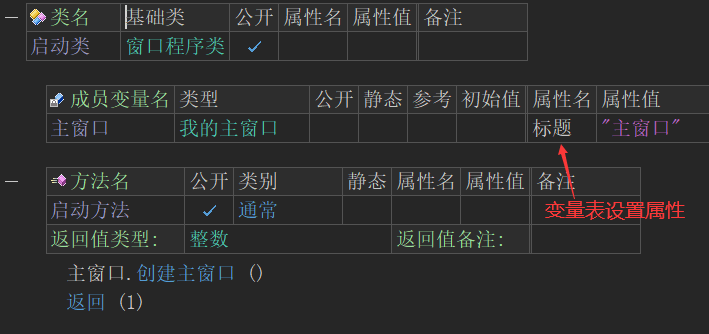
需要注意的是，如果变量表和类表格同时存在属性，最终结果会以变量表中的属性为准。
注：并不是类中填写是属性不生效，而是被变量表中的属性覆盖了。
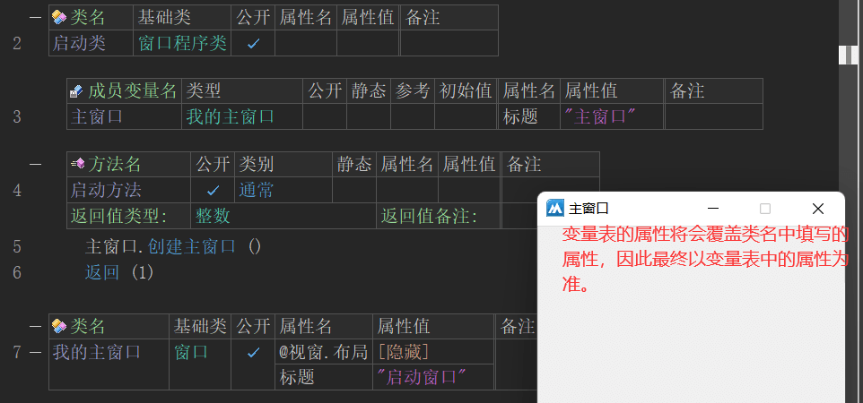
4. 光标定位类表中，按快捷“Alt + Enter”可以打开一个独立的属性表填写窗口，进行属性设置。
注：此操作并非只有窗口可以用，只要定义的变量或类存在属性就可以使用。
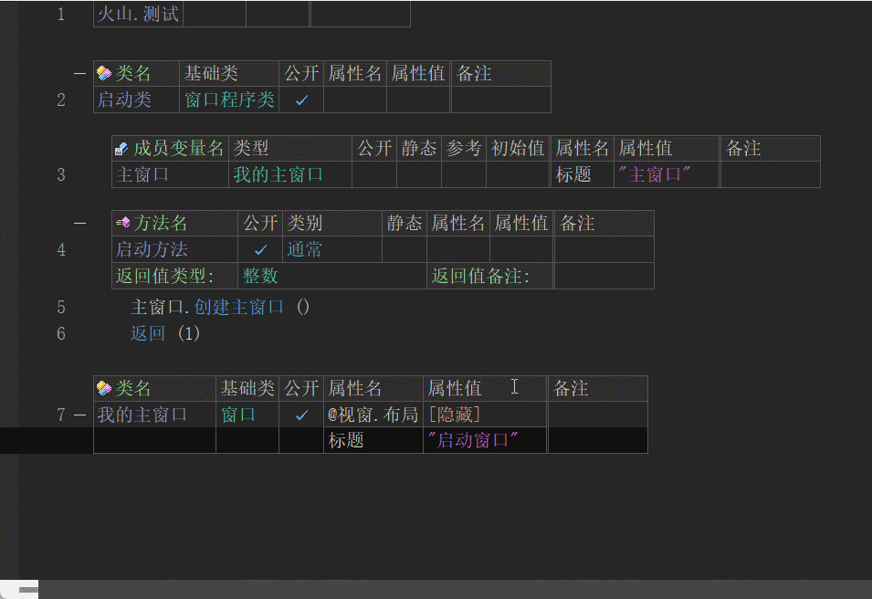
5. 通过代码动态设置。
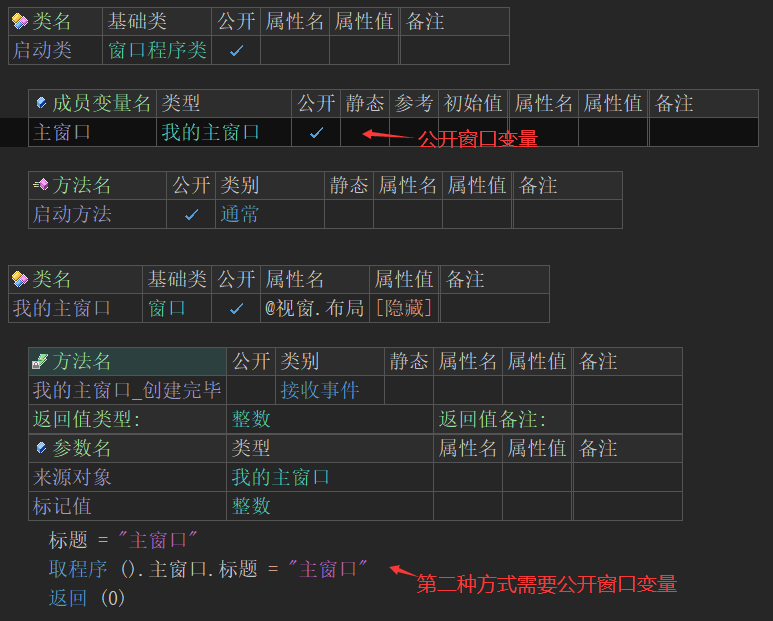
3、创建新窗口
易语言演示：
在易语言中需要右键窗口分类进行插入新窗口。
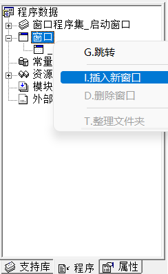
火山演示：
在火山视窗中就简单很多，使用快捷键“Ctrl+D”新建一个类，基础类填写窗口即可。
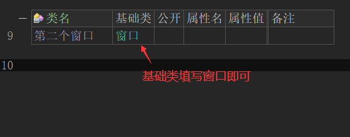
4、载入窗口
易语言演示：
在易语言中调用“载入()”方法，将窗口名填入参数1即可。
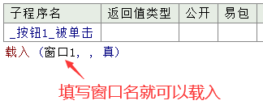
效果如下：
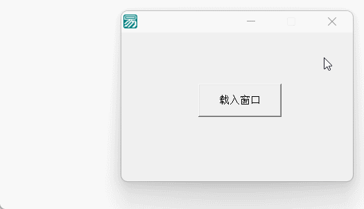
火山演示：
在火山中载入窗口需要定义一个变量，基础类填写窗口类名，然后通过窗口变量名调用“创建窗口”即可进入新窗口。
注：除对话框窗口外，其余所有类型窗口都需要定义成员变量。
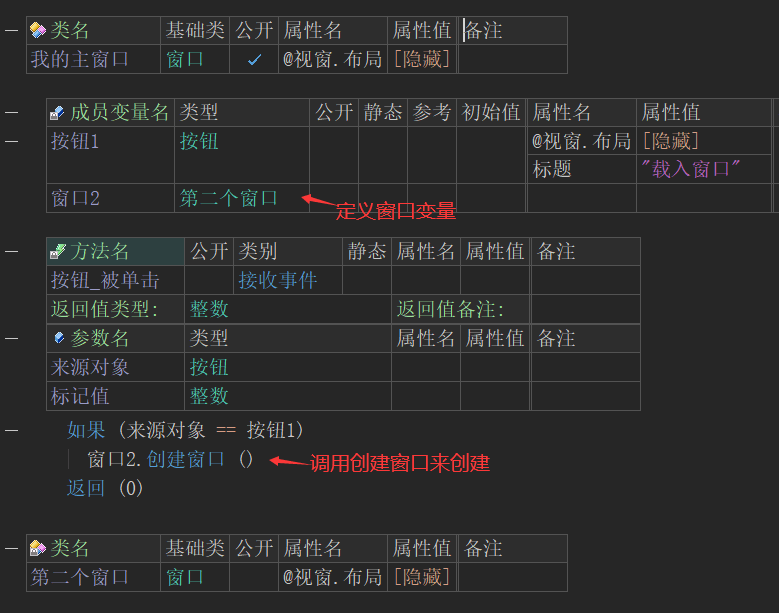
效果如下：
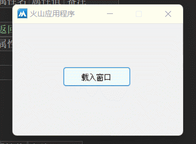
易语言和火山视窗载入窗口方法对照表：
易语言 火山 注释 演示图 载入 (窗口名字, , 真) 窗口变量.创建对话框 () 以模态对话框的方式创建并显示本窗口。
对话框窗口创建后，鼠标只能控制对话框窗口，关闭后才可以操作其它窗口。
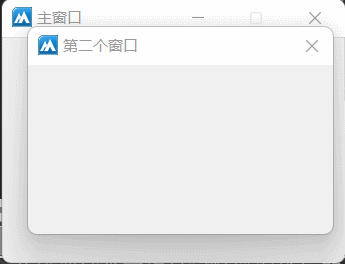
载入 (窗口名字, , 假) 窗口变量.创建窗口 () 创建一个普通窗口。
在普通窗口模式下，新窗口被创建后依然可以操作其它窗口，并且在操作其它窗口时可以覆盖当前被操作的窗口。
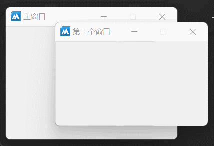
载入 (窗口名字, 父窗口名字, 假) 窗口变量.创建弹出子窗口 (父窗口名字) 创建一个窗口并将其作为其它窗口的弹出风格子窗口。
当新窗口被创建后，依然可以操作原来的窗口，但操作原窗口时不会覆盖新窗口。
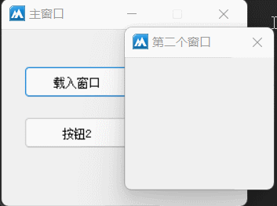
无 窗口变量.创建子窗口 (父窗口名字) 创建一个嵌入式的子窗口。
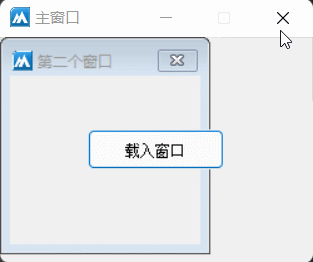
5、火山视窗扩展知识“取程序()”
5.1 在火山新建MFC窗口之后会看到如下代码
代码共有4个区域：
(1) “启动类”整个程序的主要入口，整个程序都是由此进入，并且在程序运行过程中，此类不会被销毁一直存在，可以在此类中放置一些不想被销毁释放的变量。
(2) 主窗口变量，在火山中必须定义变量才能载入。
(3) 启动方法，程序唯一的启动区域，启动主窗口的代码也是在此编写，通过窗口变量名称载入主窗口。
(4) 最后就是软件的主窗口类。
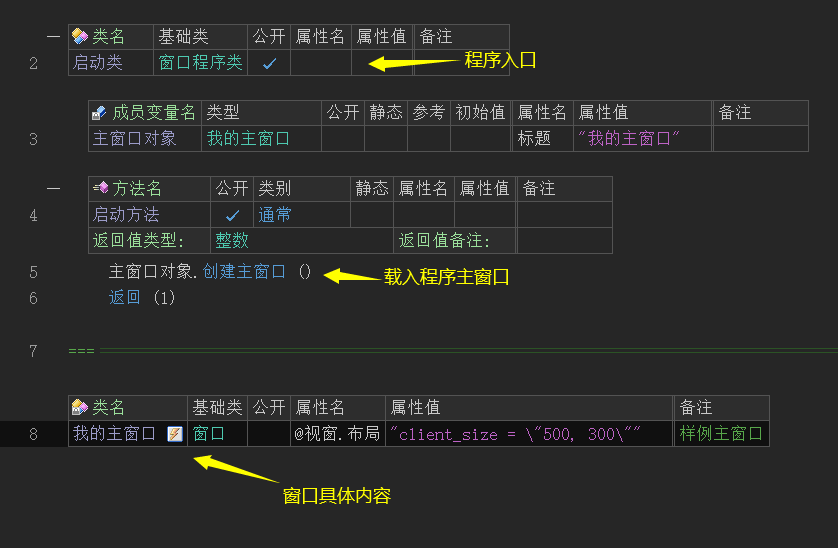
5.2 “取程序()”取的是谁？
1、“取程序”方法，实际上就是取上图中全局唯一的“启动类”对象，这个类在整个软件程序中只有一个，在任何类中都可以调用此方法来获取启动类。
如下图所示：
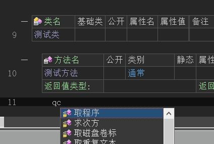
2、 在“启动类”中定义一个成员变量，勾选公开，设置初始值。
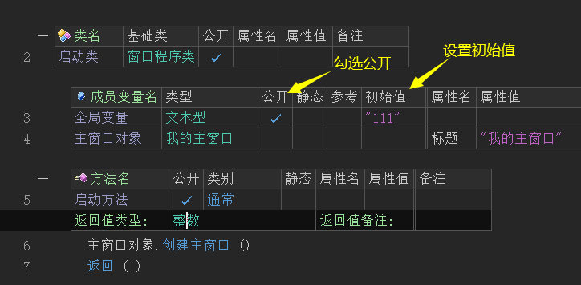
3、在窗口类右键，可以进行界面设计。
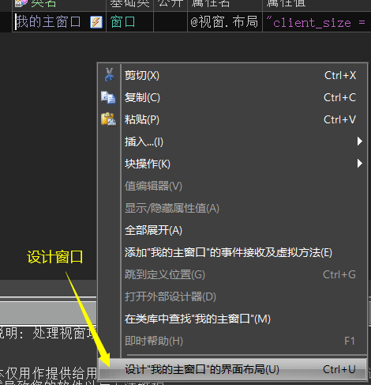
4、 找到按钮，设置按钮，设置按钮标题。
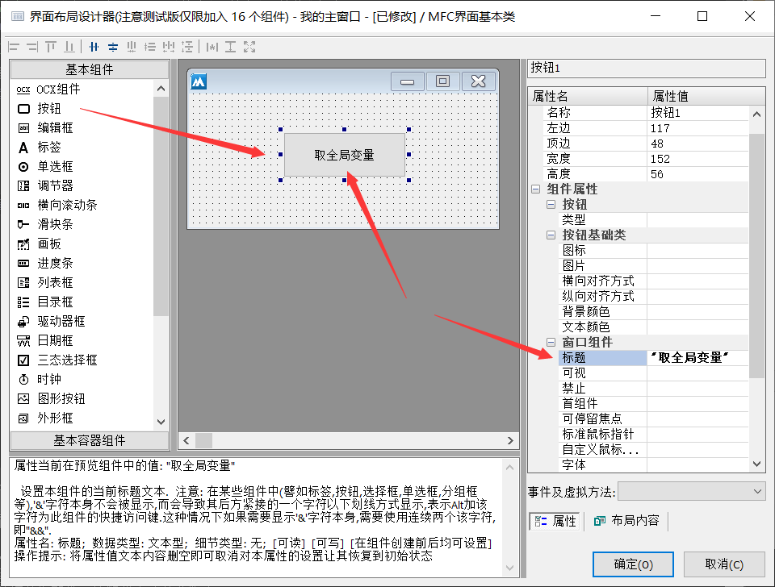
5、保存后会看到按钮变量，添加按钮被点击事件。
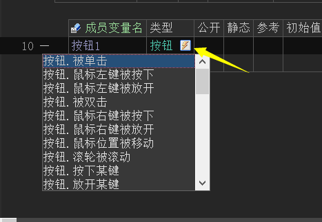
6、 通过“取程序()”取出启动类对象，然后就可以访问启动类中任何公开的成员变量或常量。
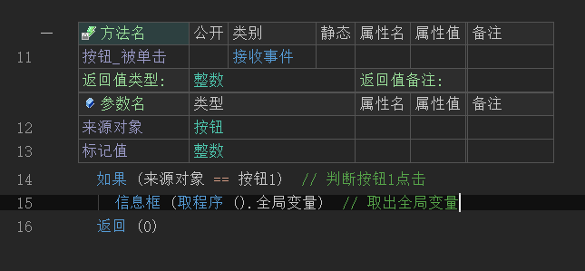
7、运行结果如下。
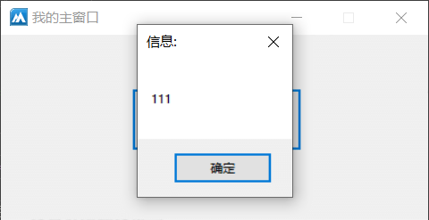
6、多窗口交互
易语言演示：
在易语言中多窗口交互较为简单，直接通过窗口名称就可以实现。
代码编写如下：
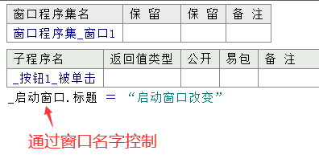
运行效果如下：
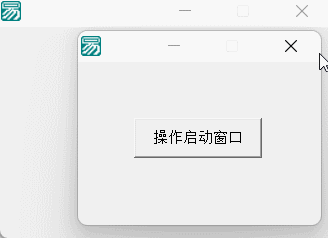
火山演示：
因在火山视窗中组件不支持静态，所以无法通过窗口类名直接操作组件，必须通过窗口变量操作。
通过这一点可以结合“取程序”方法，以实现多窗口交互。
操作步骤如下：
(1) 首先公开启动类中的主窗口变量。
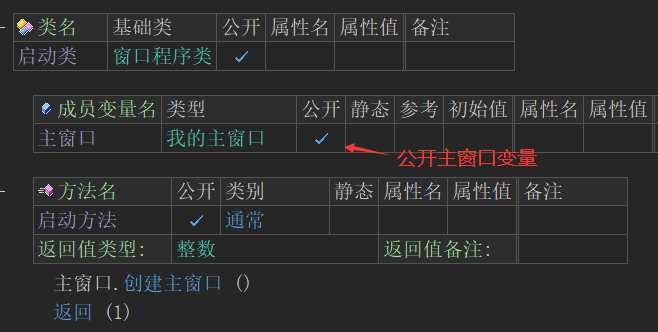
(2) 设计主窗口界面，放一个按钮和编辑框组件。
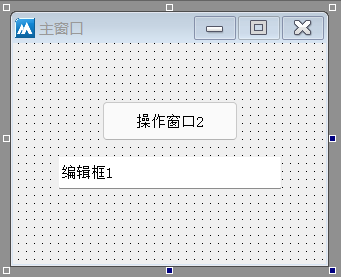
(3) 设计窗口2界面，放一个按钮组件。
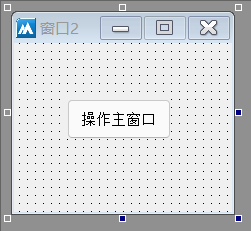
(4) 公开主窗口编辑框组件。
(5) 定义第二个窗口变量，以便于创建窗口。
(6) 主窗口创建完毕后载入第二个窗口。
(7) 按钮点击后操作第二个窗口。
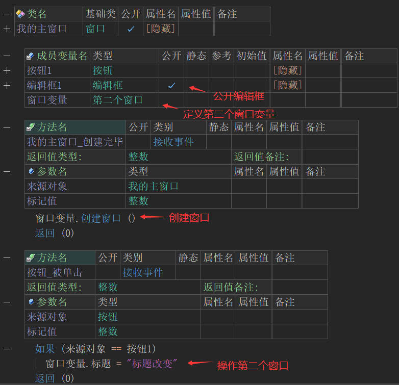
(8) 在第二个窗口按钮被点击时，就需要利用“取程序()”首先取出启动类对象，然后获取主窗口对象，通过主窗口对象就可以操作被公开的编辑框组件。
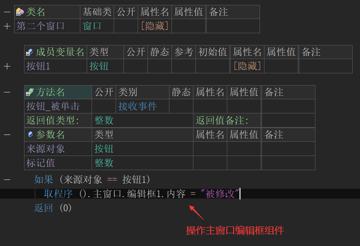
运行效果如下：
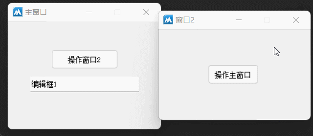